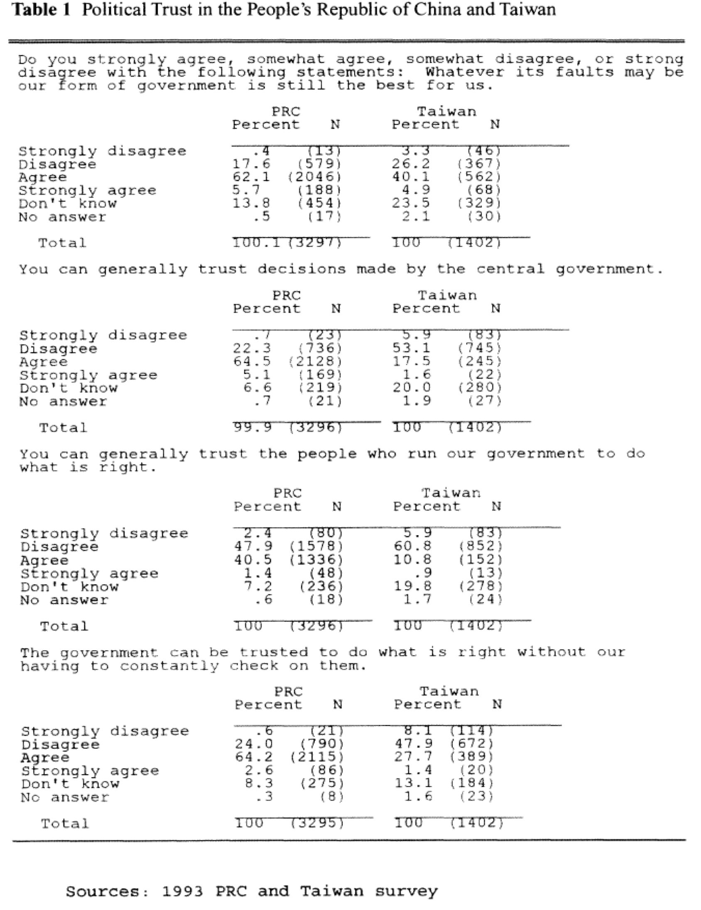
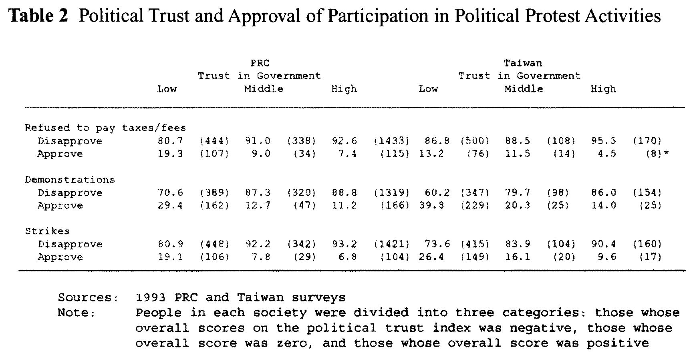
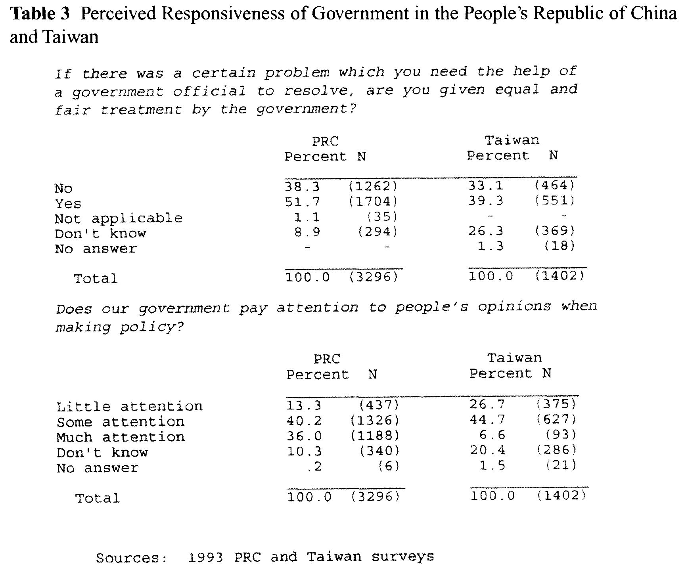
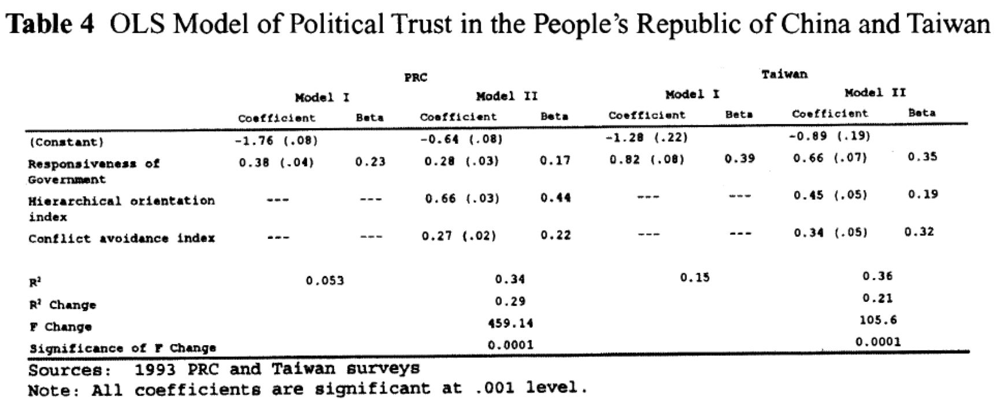
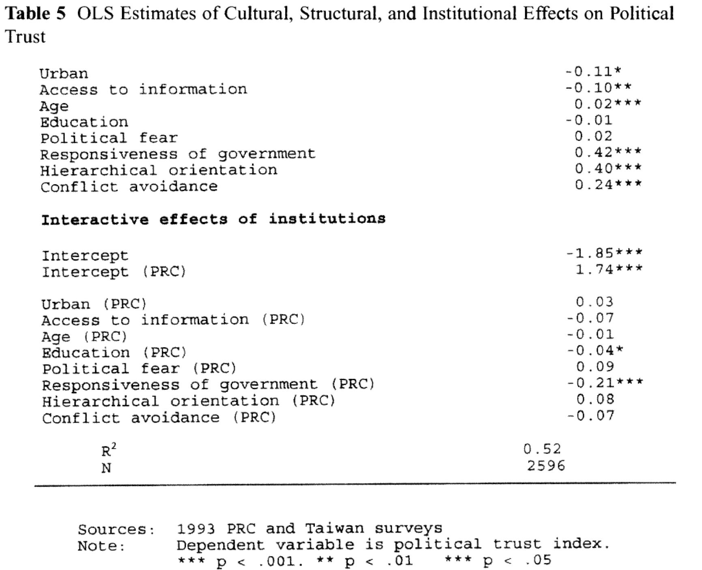
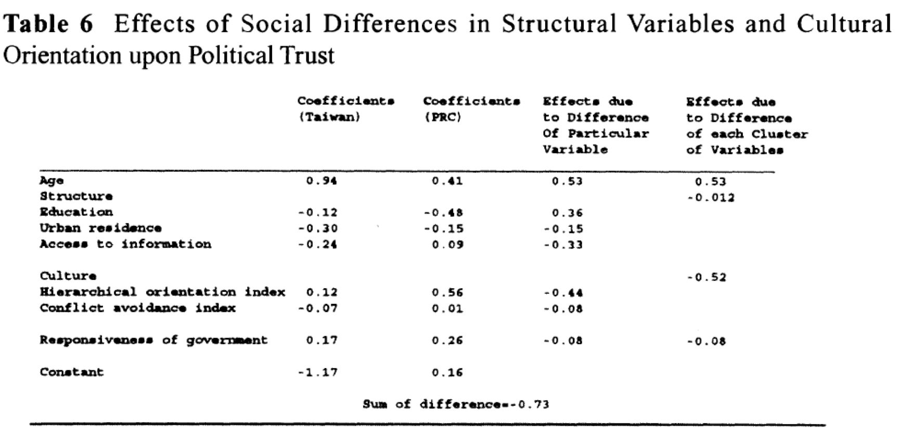

文化价值与政治信任：来自中国大陆与台湾的比较研究
收录于合集
#政治态度 13 个
#比较政治学 121 个
#政治文化 8 个
文献来源： Tianjian Shi,” Cultural Values and Political Trust: A Comparison of the People’s Republic of China and Taiwan,” Comparative Politics , Vol. 33, No. 4 (July 2001), pp. 401-419.
作者简介： 史天健（1951-2010），改革开放后首批获得富布赖特奖学金资助赴美留学，1992年获得哥伦比亚大学政治学博士学位，生前曾任杜克大学政治学系副教授，清华大学政治学系教授以及亚洲民主动态调查（Asian Barometer Survey）项目中国大陆地区负责人，研究专长为选举行为与政治参与，政治信任与政治文化，代表作有Political Participation in Beijing，Rural Democracy in China，The Cultural Logic of Politics in Mainland China and Taiwan等。
作者首先在全文开头对政治信任的概念进行了阐述，其作为“政治支持”的重要组成部分，对保持政治体系稳定具有重要价值。作者指出，当下学界对政治信任的研究有两种立场，一种是理性选择的角度，一种是文化主义的角度。从理性选择角度来看，政治能动者对利益的计算。这种观点并不拒斥文化在对他们做选择时的影响，但是并不将文化视作独立的变量。而文化主义者却认为，理性计算只是短期内基于“成本—收益”的分析，但是政治能动者的反应也是在长期形成的价值观引导下做出的。这种观点虽然不拒斥人们的选择受到制度变迁的影响，但是主张文化层面的价值观变迁要远落后于制度。同时，文化也能独立影响人们的认知，它们的影响并不会因为制度而减弱。
文化与政治信任：
尽管不少学者们意识到文化对于政治态度的重要作用，但是缺少对文化如何影响人们对政府态度的实证研究。另一方面，文化主义者区分了价值、规范、态度以及信念，既然政治信任属于文化范畴内，那怎么可以用一个文化概念去预测另外一个文化概念呢？因此，对各个文化概念的区分就格外重要了。规范与价值形成于早期的社会化进程，而态度与信念则是在个人生命历程中与政治或者社会能动者交互过程中形塑的。尽管态度与信念可能很容易因为外在的因素而受到影响，但是扎根内部的规范与价值却是抗拒变动的。正是在这层意义上，制度变迁会影响到人们的态度与信念，但是却不能迅速影响人们坚守的价值与规范。因此，文化的影响来自于价值与规范的“黏性”。
中国政治文化对政治信任的影响：
中国政治研究者已经注意到中国政治文化在塑造个人与权威之间关系的作用，这一作用表现在如下两方面，其一是中国的权威与个人之间存在差序等级，但也要求当权者实现人们的要求，否则就会在公众之间失去威信，而不是西方语境式的执政者与平民之间的互惠、尊重的关系；其二是中国政治文化素来具有避免冲突的导向。与西方相比，中国政治文化中对社会的理想控制在于自律。因此，在人与人之间的利益发生严重冲突的情况下，中国人通常愿意选择非冲突方式来解决，愿意为了整个社会的和谐而牺牲自己的利益。
为何选择中国大陆与台湾进行比较：
作者指出，在行文中不仅需要展示不同的价值与规范对人产生的影响是不同的，也需要展示这些影响不能被制度或者结构所解释。因此，需要同时控制文化、结构以及制度来分别论证它们对政治信任的影响。中国大陆与台湾的比较研究为检视政治文化的影响提供了一个良好的案例。作者利用1993年完成的调查数据检视了文化的影响能否被现代化与制度主义学派提倡的结构和制度变迁减弱。
核心概念的测量：
作者指出，为了检测应答者是否做了真实的回答，用了三组问题来测量受访者回答的信度。第一组排除了应答者回答“不知道”或者给出错误答案的情况。如果他们隐藏了自己的偏好，那么中国大陆的受访者选择这些答案时应该远高于台湾。但是表1所示的结果却截然相反。

接下来的两组测试分别检验了受访者在回答过程中是否受到误导或者感到恐惧。第二组问题显示两大社会都有相当程度的受访者感到担忧，但是大陆民众要多于台湾民众。如果民众的政治信任是排除担忧之后的结果，那么他们的回答就与测量的问题高度相关。如表2所示，第二组测试显示公众担忧与四组问题相关但是强度较弱，即民众的担忧感并未对调查产生显著影响。
第三组测试高水平的政治信任与低水平的政治信任以及它们解释政治行为时的差异。如果人们在回答时隐藏了偏好，那么他们应该更愿意采取非常规手段进行抗争。但是如表2所示，政治信任与非常规手段意愿之间存在负相关。
因此，作者指出，受访公众做出的回答是比较可信的。(编者注：关于受访者在回答过程中是否隐藏了自己的偏好，学界已经可以用List Experiment等实验方法进行测量。现任美国爱荷华大学政治学系主任唐文方教授在2016年出版的专著 Populist Authoritarianism Chinese Political Cultureand Regime Sustainability 中第8章用调查数据对公众的偏好隐藏做了详细探讨，指出中国公众较高的政治信任是可信的。)

在政治文化方面，与中国大陆相比，有更多地台湾民众信任对政府表现得更为不信任，但是在冲突导向与维护个人利益方面表现得较为相似。尽管当时完成民主转型已有8年，但是仍有相当一部分台湾民众愿意为了社会和谐而牺牲自我利益。这也表明，与制度变迁相比，价值与规范的变迁是缓慢的。
在政府回应性方面，与台湾相比，中国大陆民众认为政府对公众诉求的回应性比较高，但是作者指出这么高的现象背后也有一定条件。（参见孟天广、潘婕、杨平：《中国地方政府回应民意的条件》）

文化对政治信任影响的实证检验：
作者分别放入政府回应性变量和价值观变量进行测算，结果如表4所示，所有变量对政治信任的影响都是显著的。与中国大陆相比，政府回应性对民主化后的台湾影响更大。价值观对两大社会产生的影响要大于政府回应性。这一结果有力地支持了文化在形塑人们政治态度时的重要作用。

为了检视文化对政治信任的影响，作者将政府回应性、结构性资源（编者注：现在我们一般表述为社会人口学变量）与制度三类变量设置为控制变量，将中国大陆与台湾两大社会设置为哑变量。数据结果处理如表5上半部分所示：首先，“政治担忧”对政治信任没有产生统计学上的显著影响，说明受访者并不担忧在受访过程中做真实的回答。其次，结构性资源对政治信任起到了显著影响作用，这符合现代化理论的逻辑。第三，政府回应性在形塑公众的政治态度时扮演了至关重要的角色，这也与理性选择理论相符。最后，价值观导向对政治信任发挥了强有力的作用。说明与其他文化相比，传统文化影响下的公众更愿意信任政府。表5下半部分则是对交互项的检验。

价值与规范影响了政治信任的差异吗？
作者指出，表6检视了结构性因素、文化以及制度三类变量分别对中国大陆和台湾政治信任的影响，结果表明，政治文化因素显著地导致了中国大陆与台湾之间政治信任的差异。

**
**
结论
结构与制度固然会影响公众的政治态度，但是政治文化并不会随着制度变迁而发生迅速变化，它同样对政治信任产生了显著的影响，与中国大陆相比，政府回应性更为强烈地影响了台湾公众的政治信任。跟更多持威权主义价值观的公众而言，当政府不能回应他们的要求时，其可能会选择放弃自己的私人利益而不是撤回对政府的支持。因此，价值和规范的缓慢变迁为民主转型后的政权提供了回旋余地。更重要的是，如果没有政治精英文化的转变，完成转型后的政体也可能发生民主回潮。
编后记：
这是已故杜克大学政治学系副教授、清华大学政治学系教授史天健先生早年发表在《比较政治学》杂志上的文章。根据谷歌学术的检索，其在英文世界被引次数达到317次，代表着在美中国学者早期在国际学术界的突破。这篇文章既有扎实的理论论述，也有严谨的数据分析。这一研究也为史天健教授在世的最后一本著作《中国大陆与台湾政治中的文化逻辑》奠定了基础。2015年，也就是在史天健教授意外离世5年之后，杜克大学曾在《今日杜克》（Duke TODAY）官网发表了“史天健对政治科学的影响依然在持续”的短文，对史天健教授的学术贡献作出了高度评价。同时，当下海外有关政治信任与政治支持的研究已经日益成熟，国内研究也取得一定成果，特别是从政治文化的角度进行阐述的学术成果也逐渐丰富，但是政治信任依然处于不断的变动之中，比如不同时期同一因素对政治信任产生的影响也不尽相同，随着数据调查与分析技术的推陈出新，其研究价值非但没有过时反而愈发重要。
推荐阅读：
专著 ：
Bruce Gilly, China’s Democratic Future ： How It Will Happen and Where It Will Lead , NewYork: Columbia University Press, 2004.
Tianjian Shi, The Cultural Logic of Politics in Mainland China and Taiwan ,New York, NY: Cambridge University Press, 2015.
Wenfang Tang, Populist Authoritarianism Chinese Political Cultureand Regime Sustainability, NewYork, NY: Oxford University Press, 2016.
Yun-han Chu et al. eds., How East Asians view democracy , New York: Columbia University Press, 2008.
论文：
Bruce J. Dickson, Mingming Shen and Jie Yan, “Generating Regime Support in Contemporary China: Legitimation and the Local Legitimacy Deficit,” Modern China, Vol. 43, No.2 (March 2017), pp.123–155.
Tianjian Shi and Jie Lu, “The Shadow of Confucianism,” Journal of Democracy, Vol. 21, No. 4 (October 2010), pp.123-130.
Lianjiang Li, “Political Trust in Rural China,” Modern China , Vol.30, No.2 (April 2004), pp.228-258.
Lianjiang Li, “Reassessing Trust in theCentral Government: Evidence from Five National Surveys,” The China Quarterly , Vol.225 (March 2016), pp.100-117.
Yun-han Chu, “Sources of Regime Legitimacy and the Debate over the Chinese Model,” China Review, Vol.13, No.1 (Spring 2013), pp.1-42.（链接：朱云汉：“中国模式”的合法性从哪里来？）
[美]唐文方：《政权合法性比较研究: 以中国大陆和台湾为例》，《国外理论动态》，2013(7):66-81。
请支持我们的苹果用户请长按识别二维码赞赏
政观编辑部